Believe
it or not, but you can try a descent Guinness at a
real Irish pub in Belgorod, Russia.
Click here to see photos from the band’s trip to Belgorod
and the gig at the Hamilton’s Pub.
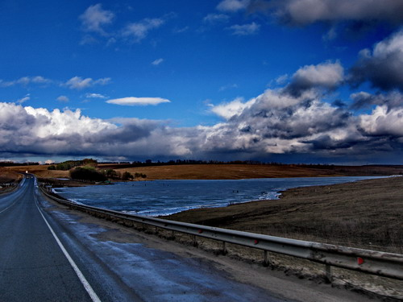
On March 13th, 2008 tune in to the Pervy Musicalny
TV channel to see Svet’s interview at 120/80 program.
The program will go on the air at 9 a.m., 1 p.m.,
5 p.m. and 10 p.m.

NP-VIDEO presents SVET BOOGIE BAND LIVE
DVD
The band’s new program, presented at the Moscow’s
Jazztown Club in August, 2007 is now available on
DVD. The disc includes new songs, interviews with
the band members, critics and fans, plus a documentary
about blues jams at the Jazztown Club.
total time 56:42
 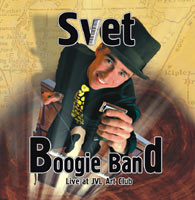
KOVCHEG record company presents
re-issue of the band’s Happy with the Boogie and Live
At JVL Art Club CDs. Both albums were originally released
in 2004 by the band.
Click here
to read an article about
Svet Boogie Band featured in December 10, 2007 edition
of Minsk independent weekly BELGAZETA
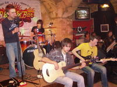
Best regards to the managers,
staff and visitors of Dikiy Z Club in Odessa, Ukraine.
Thanks for your hospitality and positive emotions
you gave us.
Click here
to see pictures from the show
at Dikiy Z Сlub.
The band would like to thank
everybody involved in making the show for excellent
job. We also thank all of you who came to the convert
for being so warm to us.
Check out photos
from the show provided by
Bri.

On December 6, 2007 Svet
Boogie Band will play a 2-hour long gig at Minsk's
biggest concert hall. The concert will consist of
two parts
1. Tribute to Chicago Blues
2. Groovy beats (new songs, never performed in Belarus
before)

November 18, 2007
Minsk Blues 2007 festival
Svet Boogie Band will headline the festival. A four
hours long show will feature sets by almost all Belarusian
blues musicians.
On November 16, 2007 at 4 p.m.
ask Svet a question during live webchat at the Special
Guest project of OPEN.BY
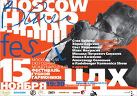
November 15, 2007
Moscow International Harmonica Festival
Svet Boogie Band will headline the festival alongside
Steve Baker (Germany) and Erik Bergene (Norway). The
festival will also feature the majority of Moscow
Blues harp players such as Petrovich, Alex Solovyev
and Vovka Kozhekin as well as Max Nekrasov from St.
Petersburg.
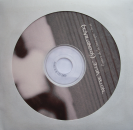
Svet’s new solo work Notre Ville in stores.
It is a soundtrack to Thornton Wilder’s play “Our
Town”. The play was staged by Demain le Printemps
theatre. Director - Ekaterina Ogorodnikova
CD contains Thornton Wilder’s
play, slideshow by Dennis Novikov (a.k.a. Pensador)
and music from the play, including a new song Bon
Nuit. Vocals recorded and mixed by Oleg Domanchuk
at the Maple Tree studio.
On
June 11, 2007 Svet Boogie Band featured at the blues
section of the Pustiye Holmi 2007 festival. Pustiye
Holmi is one of the largest and the most unusual festivals
in today's Russia.
For full information about the event log on here
At 9 p.m., March 13, 2007, tune in to the Belarusian
National Radio (Kultura channel, 102,9 FM) to hear
Svet and Al playing acoustic set at Marina Tikhomirova's
program.

Ask for Svet Boogie Band's new
Goin' to London CD at Video-Nevideo music store!!!
On March 9, 2007 Svet Boogie
Band will present its first music video Goin' to London
during their two-hour show at the Veteranov hall.
The show begins at 7 p.m.
__________________________________________________________________________
On January 14, 2006 tune in on the TV Channel One
at 00.05 to see a program about the GBOB Final in
London.
__________________________________________________________________________
At 11.45 on January 7, 2006 watch a documentary about
Svet Boogie Band's trip to London at the LAD Channel.
The film will include an interview with the band,
music video for the new song Goin' to London and more.
The program will be retranslated on Jan. 9 at 12.05.
__________________________________________________________________________
Muzykalnaya Gazeta newspaper
in its January 2006 edition will feature article about
the bands experience in London and Svet's interview.
__________________________________________________________________________
Russian web-weekly Polny Jazz
features photos
from Svet Boogie Band's show at Jazz Town Club in
Moscow.
__________________________________________________________________________
Svet Boogie Band won the National
final for the Global Battle of the Bands competition.
The band will represent Belarus at the GBOB Final in
London on December 10, 2006. Svet Boogie Band will compete
with 25 other groups from all over the world for $ 100.000
first prize.
__________________________________________________________________________
On October 12, 2006 Svet Boogie Band will headline Minsk
Blues 2006 festival.
__________________________________________________________________________
Svet Boogie Band takes part in National final for the
Global Battle of the Bands competition.
The event is to be held in Minsk in September-November
2006. A winner of the National final will have chance
to compete in the GBOB Final in London.
For details of the competition, log on to www.gbob.com.
__________________________________________________________________________
On July 7, 2006 Svet Boogie Band takes part in the Seventh
Sense festival. This major event is sponsored by Mild
Seven and includes live sets by well-known British club
projects Blanco de Gaia and the Hybrid, as well as by
famous Russian rock-band B-2.
The festival is held at the National Exhibition Centre
from 20.30. Svet Boogie Band will take the stage at
around 22.00.
__________________________________________________________________________
On Saturday, June 24, 2006 you can watch Svet Boogie
Band performing on the Live Sound television program
at the LAD channel.
__________________________________________________________________________
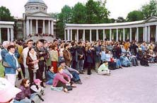
On June 3, 2006 Svet Boogie Band will feature at Usadba
Jazz festival.
This is Russia's most acclaimed jazz festival which
is held annually in Moscow. You can see Svet Boogie
Band at 19.30 at the Caprice stage - one of the festival's
three concert venues.
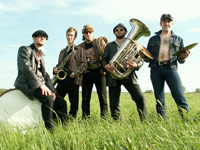
On April 27, 2006 visit the Goudvin club to see the
best of Belarusian and Russian blues in amazing two
and a half hour blues show from Svet Boogie Band and
the Blackmailers (Vladimir, Russia).
On February 2, 2006 Svet Boogie Band will perform at
the Pustye
Holmi Blues festival along with the cream of Moscow's
blues scene. The festival features American harpist
and singer Keith Dunn as a special guest.

Nothing but Love CD is available now!
You can buy the new Svet Boogie Band' CD at Video-Nevideo
music store
(Minsk, Nezavisimosti sq., pedestrian subway beside
the Belarusian State Pedagogical Univ. building).
|
 23.12.2005
23.12.2005 Nasha Niva newspaper in its December
23, 2005 issue published a list of The Most Remarkable
Albums of the Year 2005 in Belarus. The list is drawn
basing on the opinion of musical critics, journalists
and one chief of the record company and without regard
to the numbers of the CDs sold. Nothing But Love
is among top three in Best Album category.
|
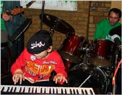 25-27.11.2005
the Third edition of the Atlant-M Children's
Jazz Festival was held at The 44 Club in
Kiev (Ukraine). Ivan Khokhlov, Svet's young apprentice,
for the second year in a row rocked the house with his
mentor's piece "Pinetop's Shuffle". Svet was
invited as a special guest this time and sang several
compositions, accompanied by the festival's house band
(Aleksandr Pavlov - guitar, Andrei Arnautov - bass,
Aleksei Fantaev - drums).
For further details log on to the official
site of the festival.
|
13-14.11.2005 the band took
part in the IV EUROREGIONALNE SPOTKANIA GOSPEL &
JAZZ held in the town of Suwalki, Poland.
For details check out the official
site of the festival.
|
 10.10.2005 10.10.2005
The presentation of Nothing But Love CD is to
be held in The Gudwin Club (16 Nezavisimosti ave., Minsk).
The show is to begin at 8.00 pm.
Special guests: Pavel Arakelyan - tenor sax,
Dmitry "Junior" Takopulo - guitar.
Articles about the band's new CD:
in Newsweek Russia by
Andrei Evdokimov
in Belgazeta by Tatiana
Zamirovskaya
Svet's interview to Belgazeta
Svet's comment on the CD:
"The blues is love, baby… I enjoyed playing
Al's song's a lot. I did my best to surprise him.
Actually, every song from this CD has its own story,
which we'll tell you at our shows.
I would like to thank everyone who helped us to make
this record. I think this is a CD for lovers, ha-ha-ha…."
|
|
29.09.2005 Nothing But Love
is to be presented to the Russian audience at the JVL
Art Club in Moscow. The concert will feature Al
and Andrei Tsygankov on guitars.
|
4-6.08.05 Svet Boogie Band take part in the
first Aurillac Swing Festival (Aurillac, France).
All the details about the programme are available on
the official site of the festival www.aurillac-swing.com.
Moreover, the band will play a number of club concerts
in France.
|
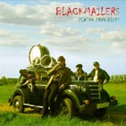
3.07.05 At Z-Club of Vladimir Blackmailers
presents their new album Zlatno Zrno Blues.
The disk was recorded in fall 2004 in Minsk at the
Maple Tree Studio. Svet and Artemij “Big Mouse” Krichevsky
participated in this recording. Svet Boogie Band
congratulates Blackmailers on the release of the album
and will be pleased to play at the CD’s presentation
in Vladimir.
|
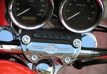
18.06.05 Svet Boogie Band took part in
the official opening of Harley-Davidson motorhouse
in Moscow. Many other groups participated in the show:
Tito & Tarantula, Blues Cousins, Kedy, Dos Grandes.
You can view the pictures here.
|
19.05.05 Svet Boogie Band played at Ural
Blues Fest, which took place at the bowling center
Universal of Magnitogorsk (Russia). The band is grateful
to the organizers of the festival and the great audience.
You can view the pictures here.
|
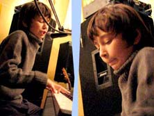 24.03-2.04.05
Ivan Khohlov taught by Svet participated
in the second Jazz festival Atlant-M for children
in Kiev (Ukraine). There he played the famous “Big
Fat Mama”. ( click
here to listen to the song).
You can find more information ( here.)
|
24.03-2.04.05 Svet Boogie
Band took part in the festival “Pustye holmy”
(Moscow, Russia) Reed for details here.
|
January 17-25, 2005 Svet Boogie
Band tours Moscow. Musicians will be part of the Cooltrain
Club Festival (Central House of the Artist). Other
participants include Vovka Kozhekin and "Mir
Station", Oleg Kireyev and "Exotic Band".
Svet will also play at the Jumbo Blues Jam in "Zapravka"
("Gas Station") together with Levan Lomidze
(Blues Cousins), Aleksey Baryshev (Blackmailers
Blues Band), and Nikolay Arutyunov (Blues League).
For full list of concerts see the Billboard
Section.
|
11.01.05 24:00. Svet
Boogie Band takes part in Marina Tikhomirova’s
Blues Night Show on the First Belarus National Radio Channel
(106.2 FM).
|

05.01.05 We are happy to present to you the band’s
debut DVD Svet Boogie Band Live At JVL
Art Club. You can watch excerpts from the concert here
(Big
Fat Mama, DivX, 3,9 MB).
|
| 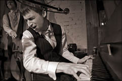 23.12.04
Svet Boogie Band returns to Minsk after
the From Sea To Sea Tour in support of
the band’s concert album Live at JVL Art Club. The concerts
took place in a string of clubs on the shores of the Baltic
and Azov Seas, with the tour ending in the best blues
clubs of Moscow. You can view pictures here.
The tour was marked by the following bright events:
The birth of Timothy, the son of our double bass player
Artyom Gavryushin
Tyoma, we congratulate you and love you very much!
The birth of new songs and invention of a number of concert
gimmicks by the band’s drummer, Kirill Shevando
|
| 26.10.04
New Svet Boogie Band CD Live at JVL Art
Club. The program was recorded during the concert at one
of the best jazz clubs of Moscow.
To buy the CD, call:
Minsk +375 29 638 30 88 (Svyatoslav)
Moscow +7 916 718 57 82 (Vladimir),
or come to the band’s concerts.
SOON!!! Full version of the concert on DVD!
|
| 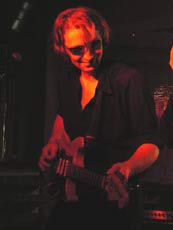 30.10.04
Svet Boogie Band hosts the Minsk tour of the
inimitable guitar vitruoso Aleksey Baryshev with his Blackmailers
Blues Band (Vladimir, Russia)
Concert Schedule:
October 29 (Friday), 22:00 - BRONX (Varvashenya
Street 17/1)
October 30 (Saturday), 19:00 SATURDAY BLUES PARTY
GRAFFITI Club (Kalinin Pereulok,16)
Together with Svet Boogie Band (Minsk)
For additional information call:
Velcom 103, 105 (BRONX)
(029) 693 74 16 (GRAFFITI)
|
 15.10.04.
Svet Boogie Band’s Little Tia, Little Tia (Svet) is included
into the Russian blues compilation I Won’t See Mississippi-2. 15.10.04.
Svet Boogie Band’s Little Tia, Little Tia (Svet) is included
into the Russian blues compilation I Won’t See Mississippi-2.
“Our blues achievements are associated with specific names.
Arsen Shomakhov and Ragtime (Nalchik), whose work may
be called a new development in modern blues. The young
Vladimir Demyanov with his Blues Doctors (Yekaterinburg)
shows brilliant blues singing and guitar playing worthy
of the best American traditions. Levan Lomidze and his
Blues Cousins – utmost professionals who are conquering
America with their fantastic drive. Svet Boogie Band from
Minsk delivers exclusively stylish and emotional traditional
blues in a very natural fashion. The Bratetsky-Korablin
duo and Yuri Kaverkin’s Dirty Dozen have invaded the Russian
black Delta blues country, heretofore conspicuously vacant.
Mikhail Mushuris has created an extremely stylish orchestra
which brings together a group of professional musicians
- each concert is a real show with a superb bluesy-swingy
sound."
You can read the full text of the Blues.RU editorial here.
|
|
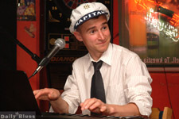 29-30.07.04
Svet Boogie Band played 2 gigs at the best polish blues
clubs- Blues
Club (Gdynia) and Daily
Blues (Sopot).
Check out the photos
from the tour.
On August, 12 - 14 the band plays in Moscow
and jy August 20 - come back to Poland. Actually Svet
Boogie Band will be at the magnificant "blues"
town Otwock (near Warsaw).
Please check out the list of
gigs.
|
21.06.04 In My Kitchen / Happy
With the Boogie - read the article of wellknown russian
journalist Andrej Evdokimov on the press
page or www.blues.ru
|
| 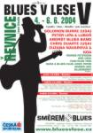 06.06.04
Svet Boogie Band plays at the biggest Czech blues festival
Blues V Lese. in Revnice. In official website of
the festival will organized on line show Information www.bluesvlese.cz
|
3-4.06.04 Svet Boogie Band played
in Moscow. Concerts was featuring experienced bluesman
Artemy Krichevsky. Information www.blues.ru
|
| 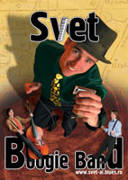 May
15, 2004. Traditional SATURDAY BLUES PARTY in the
GRAFFITI Club.
The usual red-hot performance was marked by a number of
extraordinary things.
This was the first concert without Al, the band's guitarist
and co-founder. From now on the band will be called Svet
Boogie Band. Replacement guitarist - Artemiy Krichevskiy
(ex-SPOONFUL).
Nevertheless, Al did make an appearance at the end of
the party to play several bars in Shake a Hand.
One of the most spontaneous and relaxed performances by
Svet and his band was crowned by a short jam session joined
by a novice harmonica player.
Artemiy Krichevskiy deserves special mention. His original
guitar seamlessly merged into the classic Svet Boogie
Band sound. Artemiy, an experienced bluesman, has shown
that old-timers do have something to show for their years
of blues-playing :-)
The party ended with Hooray Hooray, a virtuoso
harmonica number ardently loved by the audience which
for some reason has been neglected by Svet.
|
27.04.04 TUESDAY BLUES PARTY with
Svet & Al Boogie Band at Graffiti Club
|
16-20.04.04 Svet & Al Boogie
Band played at Big Festival Blues.ru (Moscow and Vlodimir
Clubs).
Chek out photos and music from the march tour Svet &
Al Boogie Band in Moscow.
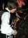 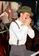 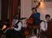 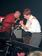
For
You My Love
|
|
|
 April
8-10, 2004 Svet & Al Boogie Band presents: Ivan
Zhuk (Moscow), bluesman extraordinaire, member of
several blues bands, including Station Mir and Boogie
Chillen (vocals, Hammond organ, guitar). In Minsk, Ivan
Zhuk will be supported by Svet & Al Boogie Band. You
can see him in concert on April 8, 2004 (Thursday),
21:00: GOODWIN Clab (Skaryna Ave. 19), RUNNIN'
ON BLUES show. Tel.: 2261306, 8 029 6261303 April
8-10, 2004 Svet & Al Boogie Band presents: Ivan
Zhuk (Moscow), bluesman extraordinaire, member of
several blues bands, including Station Mir and Boogie
Chillen (vocals, Hammond organ, guitar). In Minsk, Ivan
Zhuk will be supported by Svet & Al Boogie Band. You
can see him in concert on April 8, 2004 (Thursday),
21:00: GOODWIN Clab (Skaryna Ave. 19), RUNNIN'
ON BLUES show. Tel.: 2261306, 8 029 6261303
April 9, 2004 (Friday), 22:00: BRONX Clab
(Varvasheni str. 17/1). Tel.:2881061
April 10, 2004 (Saturday), 24:00: First Belarus
Radio Channel (FM 106.2), Marina Tikhomirova's live show
"Night of the Blues".
Supported by www.atlantm.com
|
| 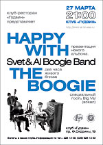
On March 27, 2004, in the Goodwin Club, Svet
& Al Boogie Band presented their new album "HAPPY
WITH THE BOOGIE".
The group gave a two-hour concert filled with down-to-earth
blues and red-hot boogie. The presentation was crowned
off with a special guest appearance of Big Val, the owner
of a unique voice and an inimitable bluesman. You can
view pictures from the presentation here.
We would like to thank the site of international automobile
holding ATLANT-M www.atlantm.com
for information support
|
March 02, 2004 Svet & Al Boogie Band
recorded new album Happy With The Boogie.
On March 16-21, 2003 The Band will leave for Moscow where
it will play several club dates in support of the upcoming
album. The band will be joined by a number of well known
russian blues musicians like Alexey Baryshev (Blackmailers
Blues Band), Korablin-Bratecky Duo, Vladimir Demjanov
(Blues Doctors), Vladimir Kozhekin and Ivan Zhuk (Stancija
Mir).
For concerts schedule go to gigs
page.
Information support by www.blues.ru
Happy With The Boogie will be presented to the
belarusian public on March, 27 at the Gudvin Club
(follow the site news).
|
February 28, 2004 Svet & Al Boogie
Band presented Saturday Blues Party. Graffiti Club.
Special guest Artemij Krichevsky (guitar).
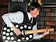 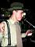 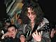 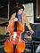
|
28.02.2004 Noch Blusa talk show
was aired by the First Channel of the National Radio and
featured Svet & Al Boogie Band and Alexey Barshev.
Murmur
Low
Lovin'
You
Let
Me Show You
|
|
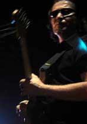 January
31 - February 1, 2004 Alexei Baryshev, the leader
of The
Blackmailers Blues Band (Vladimir, Russia) is visiting
Minsk by the invitation of Svet&Al. The shows will take
place at the GRAFFITI club (Jan. 31, 7 p.m.) and the GUDVIN
club (Feb. 1, 8 p.m.).
Svet&Al Boogie Band will accompany Alexei Baryshev during
both concerts.
For additional information regarding the first show please
contact Svet&Al management (029) 6383088.
To book tickets for the second show please contact the
GUDVIN management by tel. 2261306, (029) 2261306.
On Jan. 31 at 00.00 also tune to Channel 1 of the Belarusian
Natioanl Radio (FM 106,2 frequency) to hear Marina Tikhomirova’s
“Blues Night” live show featuring Alexei Baryshev.
|
January 12, 2004 An article of Maksim
Ivaschenko "Christmas Blues Party
in GRAFFITI Club " is availble on the site.
It was published on www.tochka.by.
Many thanks for autor.
|
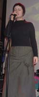 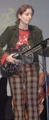
Desember 21, 2003 PROUD MARY, the unique female acoustic
blues duo from the city of Lodz (Poland) visited Minsk
on December 20-21 upon the invitation of Svet & Al.
Karolina Koriat (vocals) and Aleksandra Siemieniuk (acoustic
guitar and dobro) played concerts at the GRAFFITI
and the GOODWIN clubs showing their very own approach
to the traditional blues of the 20s and 30s. The vocals
of Karolina, lyrical and expressive at the same time,
together with the great guitar skill of Alexandra created
special atmosphere during the shows. Svet&Al Boogie Band
played acoustic program at the GOODWIN club as
supporting act and rocked GRAFFITI club with their
boogie set, which was followed by very informal jam with
Karolina and Alexandra. In addition to club concerts Proud
Mary played live at Marina Tikhomirova's "Blues Night"
aired on the Belarusian National Radio (to listen to the
recording of the concert, please visit our site later).
Click here for the photos
from the concerts.
|
November 29, 2003 Big Val, Svet &
Al took part in the "Grifomania" guitar players' festival
(Minsk Tractor Plant Palace of Culture).
|
 November
08,2003 Big Val, Svet & Al feat. Artyom Gavryushin
played at ZADUSZKI BLUESOWE Festival (Bialystok, Poland).
Read article in Gazeta
Wyborcza. November
08,2003 Big Val, Svet & Al feat. Artyom Gavryushin
played at ZADUSZKI BLUESOWE Festival (Bialystok, Poland).
Read article in Gazeta
Wyborcza.
|
October 25, 2003 Muzychny Partal
talk show was aired by the First Channel of the National
Radio and featured Svet & Al Boogie Band.
Big
Boss Man
Let
Me Show You
Long
Distance Call
Hello,
Fred
|
 18-21.10.03
The friends of us blues duo from Moscow - Korablin-Bratetsky
was in Minsk. We've had wonderful time. Click here
to see photoes 18-21.10.03
The friends of us blues duo from Moscow - Korablin-Bratetsky
was in Minsk. We've had wonderful time. Click here
to see photoes
|
10.09.03 Big Val, Svet & Al, Svet
& Al Boogie Band played at Moscow Fest Ochakovo
Blues. Click here to see
photoes.
|
02.08.03 Svet & Al together with
Big Val and Artiom Gavriushin played at JUMPING JACK
club, St. Petersburg (Gagarinskaja str., 6а)
|
01.08.03 Svet & Al together with
Big Val and Artiom Gavriushin played at B.B.King Club,
Moscow (Russia).
|
31.07.03 Svet & Al, Big Val and
Artiom Gavrushinplayed in the town of Vladimir (Russia).
Our thanks to Vladimir blues aficionados and personally
to Aleksey Makarov for inviting us there. Click here
to see photoes
|
30.07.03 Muzychny Partal talk
show recording is available on the site.
The show was aired by the First Channel of the National
Radio and featured Big Val, Svet & Al.
|
19.07.03 Svet & Al together with
Big Val played at the Bronx Club to mark the anniversary
of the Belarus men's magazine "XXl Vek ".
|
05.07.03 Click here
to see some photoes from Noc Bluesowa festival (Rawa Mazowiecka,
Poland).
|
31.05.03 Svet & Al together with Big
Val have taken the first prize at the NOC BLUESOWA Festival
held in the Polish town of Rawa Mazowiecka on May 30-31,
2003. The Czech HOOCHIE COOCHIE BAND came in second, and
the French quartet TIA & THE PATIENT WOLVES was third.
This was the 13th NOC BLUESOWA, and the first victory
for Belarus. The festival brought together musicians from
Poland, the Czech Republic, Germany, France, and Belarus.
The Belarus group P.L.A.N. was among the guest stars.
We want to thank all other contestants for being there.
We were really happy to play on the same stage with top-notch
professionals.
|
31.05.03 Our big friend Big Val has
released his CD entitled "In My Kitchen" featuring 10
classic blues compositions recorded with the participation
of SVET & AL, Pavel Arakelian (Saxophone) and Artiom Gavriushin
(Double Bass).
|